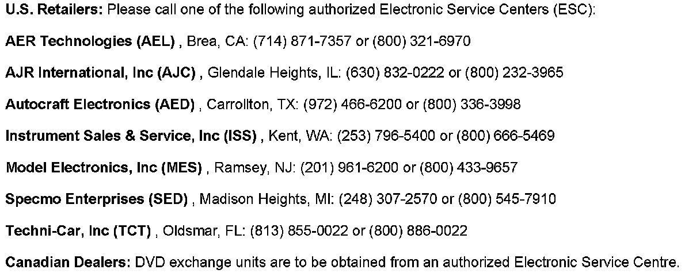

Entertainment System - Rear Video Screen Is Inoperative
TECHNICALBulletin No.: 06-08-44-026B
Date: October 08, 2008
Subject:
Rear Video Screen Inoperative - Blank/Black DVD Screen with Audio Present (Exchange DVD Unit)
Models:
2007 Cadillac Escalade Models
2007 Chevrolet Avalanche, Suburban, Tahoe
2007 GMC Yukon Models
Attention:
This bulletin only applies to DVD monitors with the following part numbers: 15294214, 15293771, 15295282, 15293772 and 15295819.
Supercede:
This bulletin is being revised to update the labor time associated with labor operation number R5554. Please discard Corporate Bulletin Number 06-08-44-026A (Section 08 - Body & Accessories).
Condition
Some customers may comment that the overhead DVD screen is blank or black but audio is present when a DVD is inserted into the player. They may also indicate that the DVD player will turn on if they eject and reinsert the DVD a second or third time or if they use the remote control power button.
Cause
This condition may be caused by the DVD screen back lighting bulb intermittently not lighting. In some cases, if you look closely at the black screen or shine a flashlight at the screen, you may be able to see that the video is playing. This is why if the DVD is ejected and reinserted a couple times, the back lamp will light.
Correction

To correct this concern, exchange the overhead DVD screen using any of the Electronic Service Centers shown above.
Warranty Information

Disclaimer